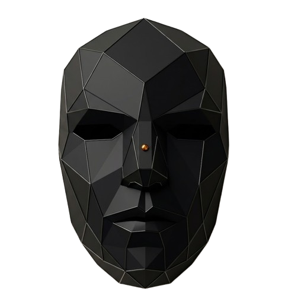

Helion Praxis
Sistema de control de voz
Arduino desconectado
Conectar Arduino
Reconocimiento de voz
Mantener presionado para hablar
Estado
En espera
Coincidencia detectada
Umbral de similitud
42%
Control Arduino
Preguntas y respuestas
53 entradas
#
Pregunta
Palabras clave
Audio
Accion
Estado